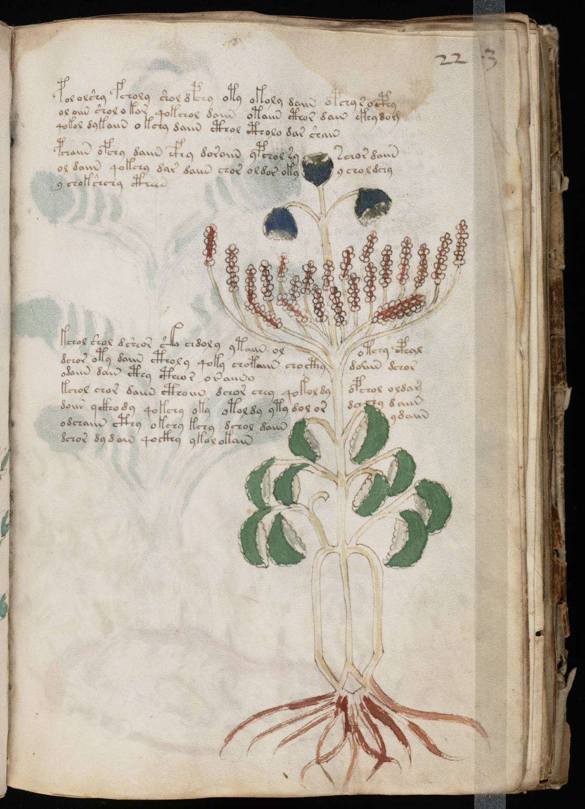

f22r
1pol olshy fcholy shol dpchy oty okoly daiin opchy s ocphy2ol oiin shol o kor qokchol daiin otaiin cthor dain ckhydom3qokol dykaiin okchy daiin cthol ctholo dar shain4pchaiin ofchy daiin cfhy doroiin ypchol syschor daiin5ol daiin qokchy dar daiin chor oldor okyy choldchy6y chokshchy ctheen7kchol shol dsheor ska chdoly ytaiin olotchy cphal8dchor oty daiin ctholy qoky chotaiin chocthydoiiin dchor9odaiin dain cthy ctheor oraiino10kchol chor daiin cthoiin dchor chey qokol dyopchol oldam11doiin yckhody qokchy oky otoldy yty dol ordachy daiin12odchaiin cthy okchy kchy dchol daiinydaiin13dchor dydain qockhy ykalokain
